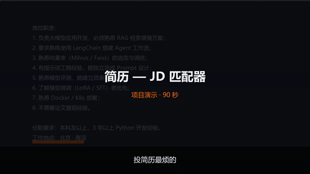
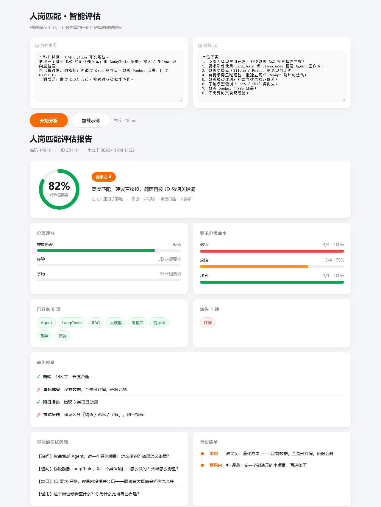
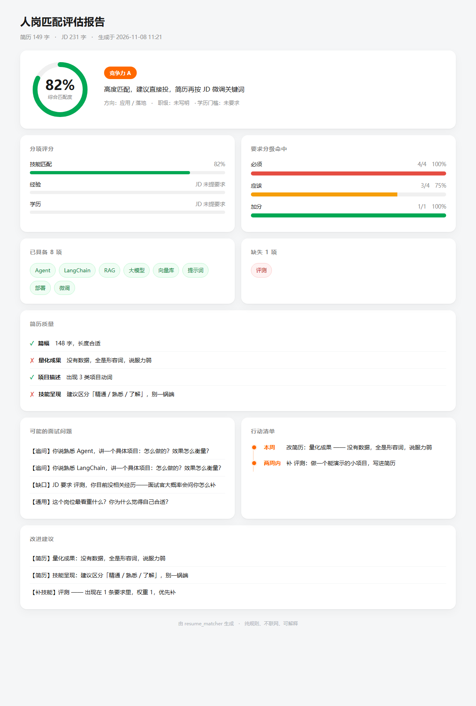

匹配度与评级、缺哪些技能、简历哪部分写得不好、按优先级排的改进清单， 以及根据缺口预测的面试问题。

前 9 秒预览 · 观看 90 秒完整演示（配音 + 字幕）
不是给一个分数就完事，而是把"为什么"拆到你能行动的程度。
综合匹配度 + A/B/C/D 评级。权重按「必须 / 应该 / 加分」三档要求分级计算，而不是简单的关键词命中率。
列出「已具备」和「缺失」的技能项，每个都回指 JD 里对应的那句话。同义词表覆盖 55 组常见写法。
简历质量检查：篇幅、量化成果、项目描述、技能呈现。给结论也给依据。
根据缺口生成预测问题，按「必须项缺口」优先排序，方便针对性准备。
求职者要的不是"你 68 分"，而是"我这 68 分是怎么来的、改哪一句能变成 75 分"。 规则引擎能精确指到 JD 的具体句子，大模型给不了这种确定性。
每一条结论都能定位到 JD 里的原句和简历里的对应表述，不用"感觉像是"。
同样的输入永远得到同样的输出。规则是显式的，调参有据可查。
纯本地运行，简历内容不出机器。对隐私敏感的场景这点很重要。
不需要 GPU、不需要 API key，pip install 之后就能跑。
诚实说明：调参用的样本和验证用的样本是分开的。
10 条标注样本里，用于调参的 10 条是「全中」——这是过拟合，不能拿来说事。 真正有意义的是 5 条留出集：4 条吻合，1 条（前端岗）失败，原因是技能词全部落在同义词表之外， 引擎只能标记为「未覆盖」，没有瞎猜。
网页版、桌面版、命令行三种入口，导出单文件 HTML 报告可直接发人。


开源在 GitHub，克隆下来直接跑。
# 1. 克隆 git clone https://github.com/13716710623/resume-jd-matcher.git cd resume-jd-matcher # 2. 装依赖（只用标准库 + 可选 scikit-learn） pip install -r requirements.txt # 3. 三种用法 python web.py # 网页版 → http://127.0.0.1:8765 python gui.py # 桌面版 python cli.py --demo # 命令行